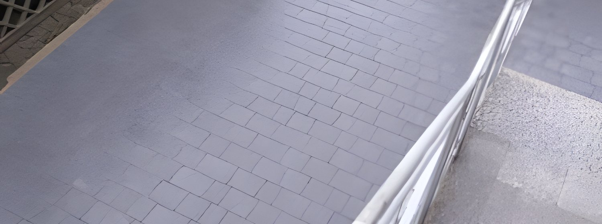

Od ścieżki w ogrodzie po podjazd dla dwóch aut. Pokaż teren albo opisz, co chcesz wybrukować - przyjedziemy, obejrzymy podłoże i przygotujemy konkretną wycenę.
Kostka pod wjazd i miejsca postojowe, ułożona na porządnej podbudowie ze spadkiem, żeby wytrzymała ciężar auta i nie osiadała.
Tarasy przy domu, chodniki i ścieżki w ogrodzie. Dobieramy kostkę lub płyty do reszty obejścia i pilnujemy równych fug.
Schody zewnętrzne, murki oporowe i palisady. Wyrównujemy różnice poziomów na działce i wykańczamy obrzeżami.
Przygotowanie ziemi pod trawnik, sadzenie krzewów i kwiatów, żwir ozdobny i uporządkowanie zieleni wokół świeżo ułożonej kostki.
Montaż nawadniania ogrodu i wyjścia pod wodę zaplanowane jeszcze przed brukiem, żeby później nie rozkopywać gotowej nawierzchni.
Czyszczenie starej, zabrudzonej kostki myjką ciśnieniową i piaskowanie fug. Nawierzchnia wraca do koloru bez wymiany.
Wykopy pod podbudowę, korytowanie, prace ziemne i wywóz ziemi. Maszyna przyspiesza robotę i skraca termin.
Odwodnienia liniowe i punktowe przy podjazdach i tarasach, żeby woda spływała tam, gdzie ma, a nie pod ścianę domu.
Wyrównanie terenu i solidna podbudowa pod kostkę - to, czego nie widać, ale decyduje, czy nawierzchnia przetrwa lata.
Prosty, przewidywalny proces. Bez niespodzianek i bez naciągania.
Przyjeżdżamy, oglądamy, doradzamy. Bez opłat i bez zobowiązań.
Jasna cena i termin na piśmie - zanim cokolwiek ruszy.
Robimy zgodnie ze sztuką, na czas, dbając o porządek.
Wspólny odbiór prac i gwarancja na robociznę.
Napisz, co chcesz zrobić - odpowiemy z propozycją i wyceną.